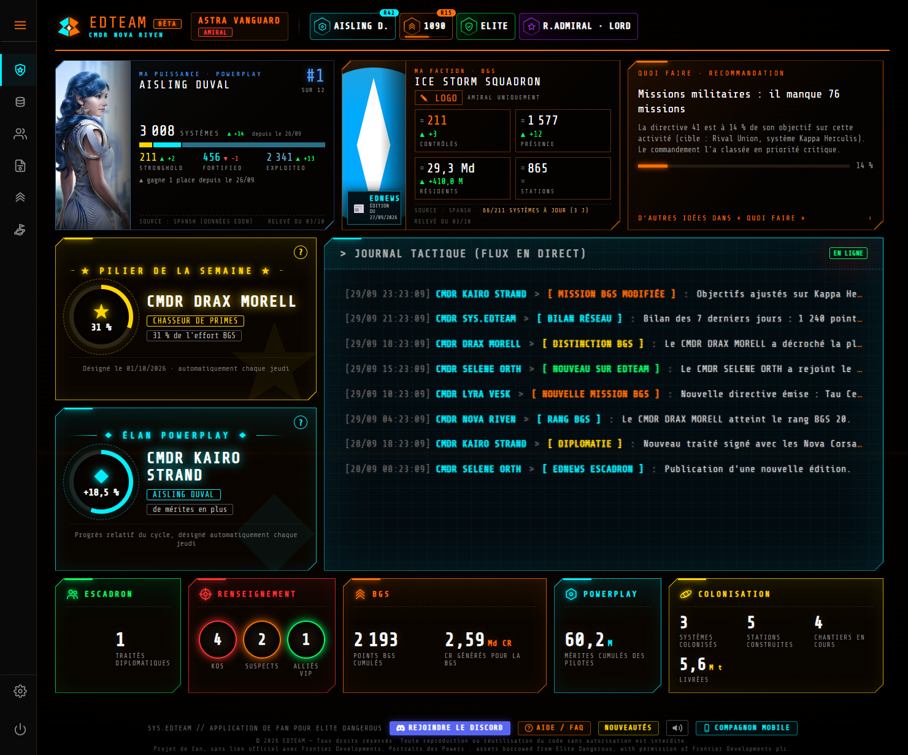
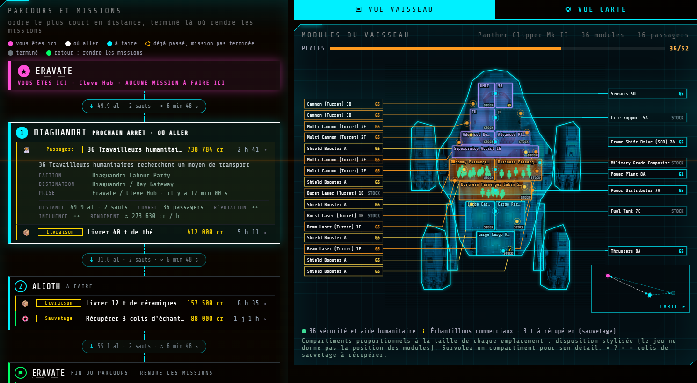
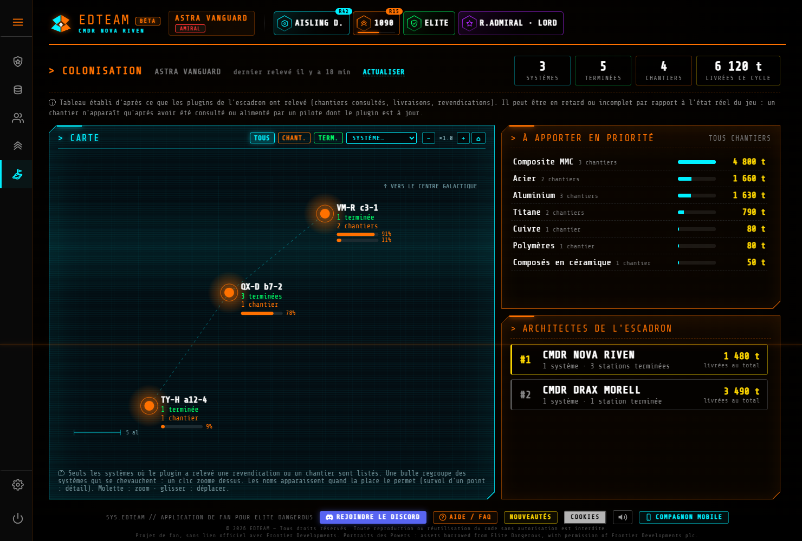
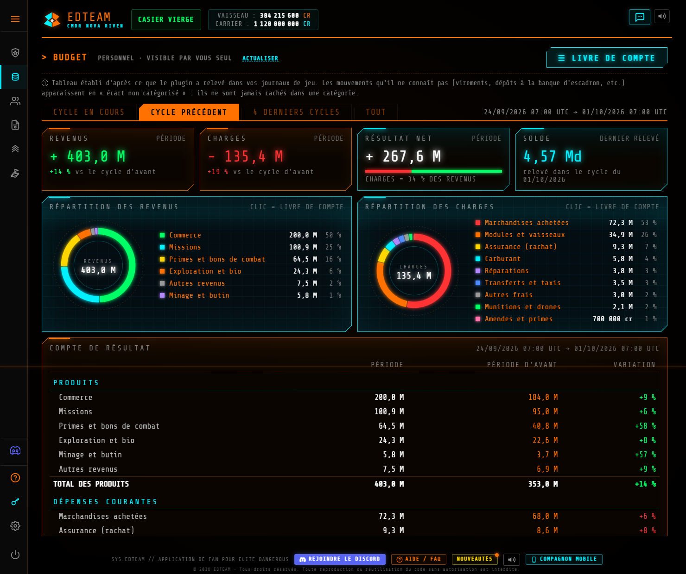
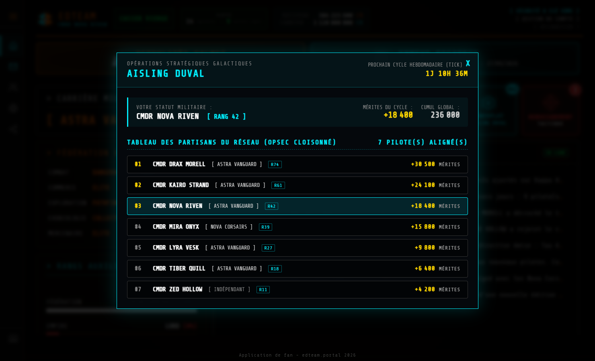
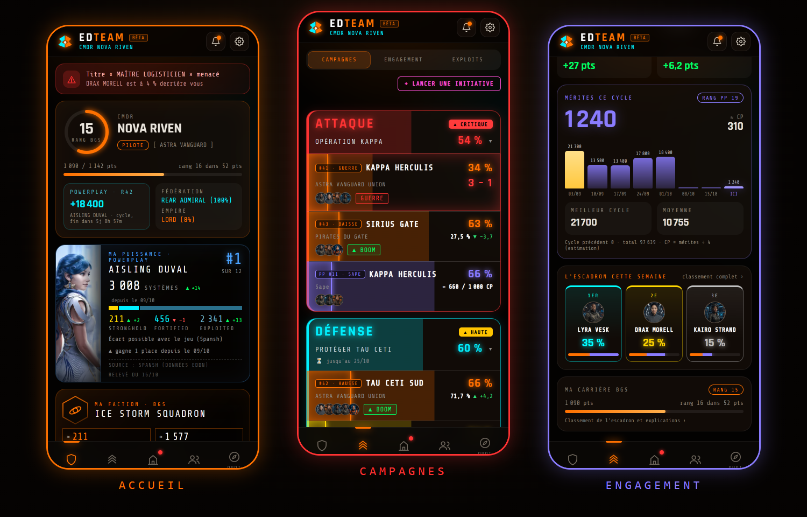

QUARTIER GÉNÉRAL
Votre rang, votre Powerplay et les actualités du réseau, dès la connexion.
Lancez Elite Dangerous avec EDMC : SYS.EDTEAM suit votre session, vos finances, vos chantiers de colonisation et votre Powerplay. Vous jouez, le site s'occupe du reste.

Trois étapes, environ deux minutes.
Une adresse e-mail et un mot de passe, puis le lien de confirmation reçu par e-mail.
Téléchargez SYS.EDTEAM.zip, placez-le dans les plugins d'EDMC, puis copiez votre clé dans ses réglages.
Au premier lancement avec EDMC, le site reconnaît votre nom de commandant et ouvre l'accès : rien d'autre à faire.
Tout est alimenté automatiquement par votre jeu.
Votre rang, votre Powerplay et les actualités du réseau, dès la connexion.

Un second écran en direct : soute, missions, routes de commerce, minage, exploration, combat.

Vos chantiers, vos livraisons et les systèmes que vous bâtissez, relevés par le plugin.

Ce que vous gagnez et dépensez, cycle après cycle. Visible par vous seul.

Votre allégeance, votre rang, vos mérites du cycle et votre progression.

L'essentiel dans votre poche, depuis un téléphone.
Pas d'escadron ? Tout fonctionne en solo. Un escadron ajoute des pages de commandement, sur invitation de son Amiral.
SYS.EDTEAM est un outil communautaire gratuit pour les pilotes d'Elite Dangerous. Un plugin EDMC lit le journal de votre jeu et alimente un site : tableau de bord en direct, colonisation, budget, Powerplay et compagnon mobile.
Oui. C'est un projet de fan, gratuit, sans lien officiel avec Frontier Developments.
Créez votre compte et confirmez votre e-mail, téléchargez le plugin SYS.EDTEAM.zip, placez-le dans le dossier des plugins d'EDMC, puis copiez votre clé dans les réglages d'EDMC. Comptez environ deux minutes.
À la première connexion, le site attend que votre plugin lui transmette votre nom de commandant : lancez Elite Dangerous avec EDMC, et l'accès s'ouvre tout seul. Rien à saisir.
Non. Tout fonctionne en solo : QG, tableau de bord en jeu, colonisation, budget et Powerplay. Un escadron ajoute des pages de commandement, sur invitation de son Amiral.
Une page à garder sur un second écran pendant que vous jouez. Elle se met à jour en direct, sans rien saisir : votre soute, vos missions, des routes de commerce, le minage, l'exploration et le combat.
Votre adresse e-mail et des informations tirées du journal de votre jeu. Le détail, ce que voient les autres pilotes et la suppression du compte sont décrits dans « Vos données, en clair » ci-dessous.
Oui. Le compagnon mobile reprend l'accueil, la colonisation et le budget depuis un téléphone.
CE QUE NOUS RECEVONS
Ce que nous ne recevons pas : vos identifiants Frontier, le contenu de vos discussions en jeu, ni aucun fichier de votre ordinateur.
Mesure d'audience : le site utilise Google Analytics (cookies, adresse IP anonymisée) pour compter les visites, uniquement si vous l'acceptez dans la bannière. Aucune donnée de votre compte n'y est envoyée. Vous pouvez changer d'avis à tout moment avec le bouton « COOKIES » en bas de page (ou dans les réglages sur mobile).
QUI VOIT QUOI
Le plugin ne tourne que lorsque EDMC est lancé, et vous pouvez le retirer à tout moment. Vous pouvez modifier votre email, votre mot de passe ou supprimer votre compte depuis « Gestion du compte » : vos données sont alors effacées.
Gratuit, sans rien saisir ensuite : le plugin s'occupe du reste.